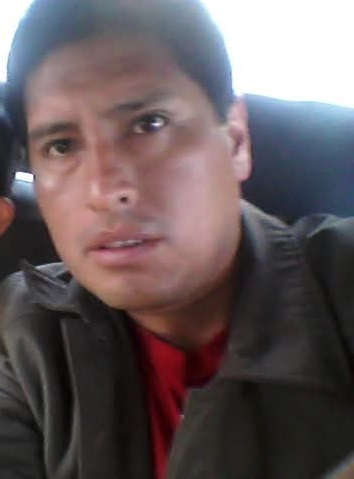

Autor: José Alberto Basurto Mamani
NRC: Nº 36371
Principales Causas de la Minería Ilegal
La minería ilegal en la Amazonia peruana surge por una combinación de factores socioeconómicos, políticos y ambientales, entre los que destacan:
- Pobreza y falta de oportunidades: Muchas comunidades locales recurren a la minería ilegal como fuente de ingresos debido a la escasez de empleo formal.
- Altos precios del oro: La demanda global de oro incentiva la extracción ilegal, ya que es una actividad lucrativa.
- Debilidad institucional: La falta de fiscalización efectiva y corrupción en las autoridades locales permiten que estas actividades prosperen.
- Acceso a tierras no reguladas: Zonas remotas de la Amazonia son vulnerables debido a la falta de control estatal.
Impacto en el Medio Ambiente
La minería ilegal tiene efectos devastadores en el ecosistema amazónico:
- Deforestación: Se talan miles de hectáreas de bosque para abrir minas, destruyendo hábitats de flora y fauna.
- Contaminación por mercurio: El uso de mercurio para extraer oro contamina ríos, afectando la vida acuática y la salud humana.
- Pérdida de biodiversidad: Especies endémicas están en riesgo de extinción debido a la alteración de sus hábitats.
- Alteración del suelo: La remoción de tierra deja suelos infértiles, dificultando la regeneración natural.


Importancia de Conocer esta Problemática
Entender la minería ilegal en la Amazonia es crucial por las siguientes razones:
- Preservación del ecosistema: La Amazonia es un pulmón del planeta, y su conservación es vital para mitigar el cambio climático.
- Salud pública: La contaminación por mercurio afecta a comunidades indígenas y locales, causando problemas de salud graves.
- Conciencia global: Informar sobre esta problemática fomenta la presión internacional para tomar medidas efectivas.
- Desarrollo sostenible: Conocer el problema ayuda a promover alternativas económicas que no dañen el medio ambiente.
Propuestas de Solución
Para combatir la minería ilegal, se proponen las siguientes medidas:
- Fortalecer la fiscalización: Aumentar la presencia estatal en zonas críticas y sancionar a los responsables.
- Promover alternativas económicas: Desarrollar proyectos de agricultura sostenible, ecoturismo y reforestación para las comunidades.
- Educación y sensibilización: Implementar campañas para informar sobre los impactos de la minería ilegal.
- Cooperación internacional: Trabajar con organizaciones globales para financiar programas de conservación y monitoreo.